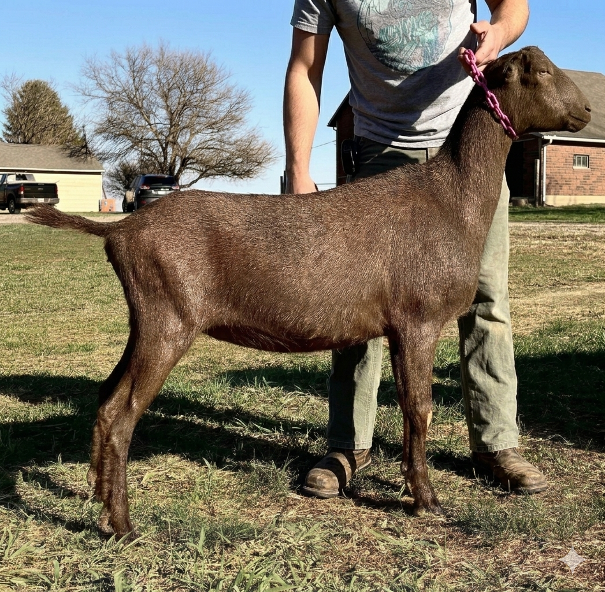
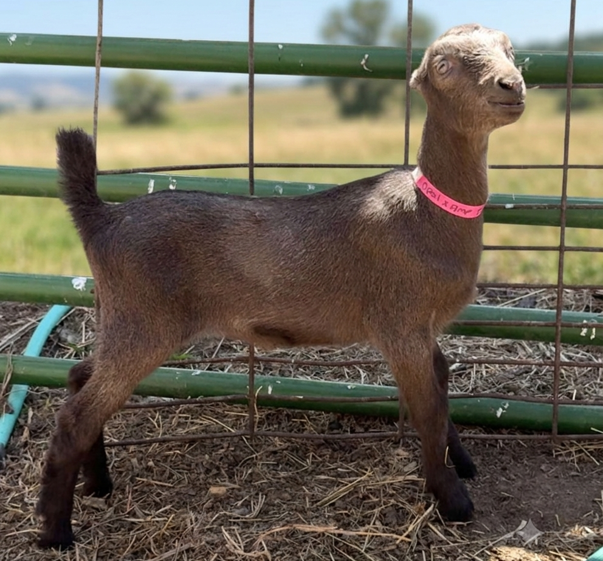

LeVian showcases a strong, balanced frame with plenty of width and capacity. She is level across her topline with a smooth, well-attached front end and a clean, extended neck. She stands on a correct set of feet and legs with good angulation, and carries depth and spring of rib through her body. Her long, level rump adds to her overall structural correctness, making her a durable and functional doe with a bold, eye-catching presence.
